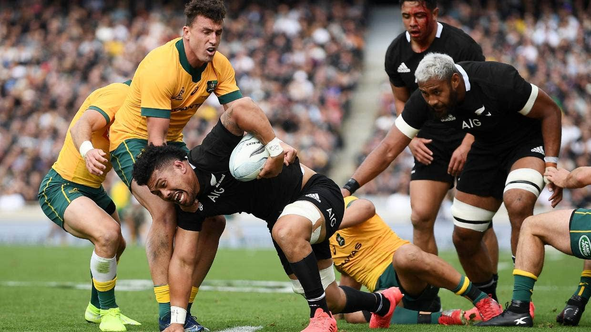
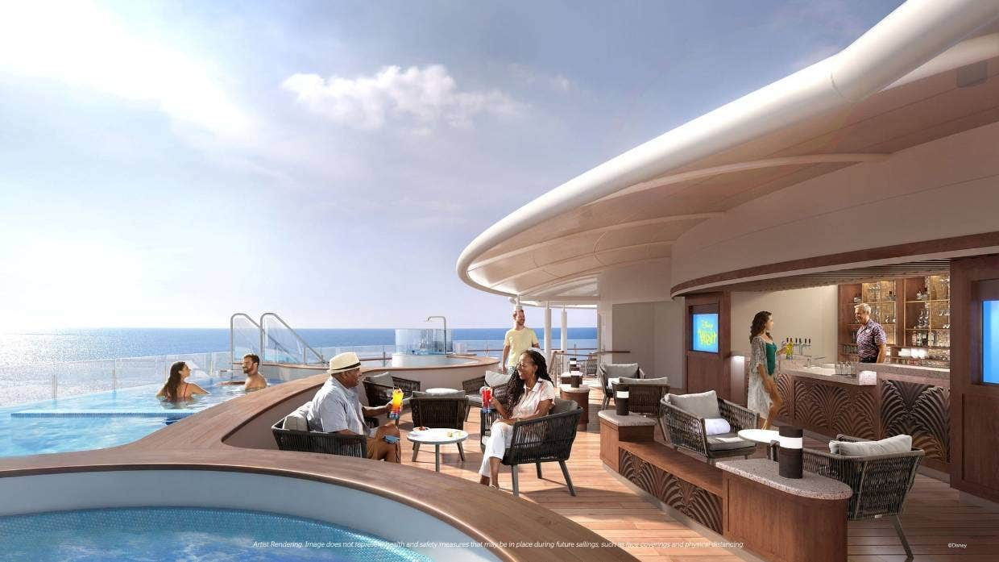
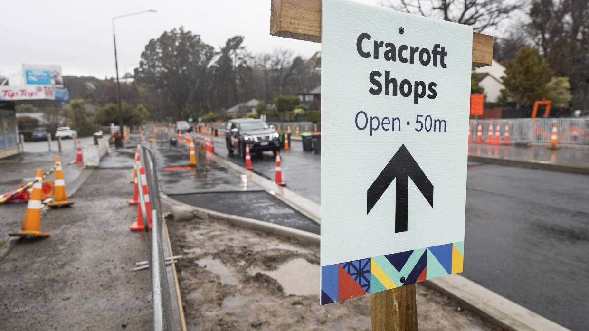
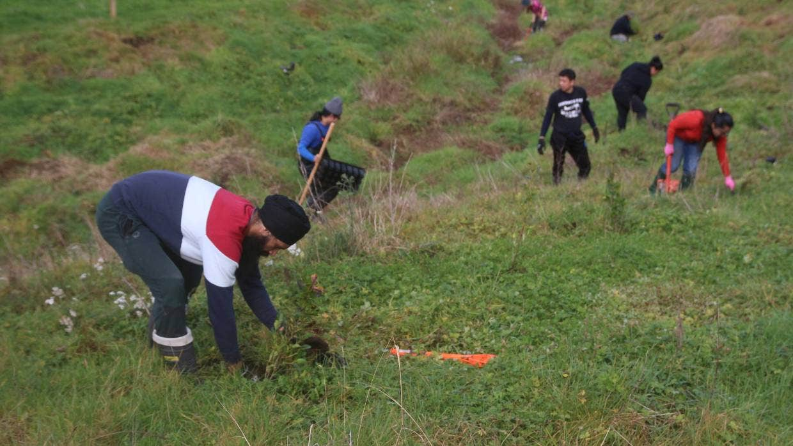

Technology
Twitter founder Jack Dorsey’s Square to buy Afterpay for $41 billion
Payments platform Square is set to acquire Afterpay in a $41 billion deal, with Afterpay’s founders to stay on at the company.
Square will acquire all the shares in Australian buy-now-pay-later juggernaut Afterpay under a scheme of arrangement with an implied value of US$29 billion (NZ$41 billion).
Afterpay shareholders will receive a fixed exchange ratio of 0.375 shares of Square Class A common stock for each Afterpay ordinary share they hold. Square last traded at US$247.26 (NZ$354.69) a share on the New York Stock Exchange.
ASX-listed Afterpay was started by Nick Molnar and Anthony Eisen in 2014 and is the pioneer in the buy-now-pay-later space used by 16 million consumers and 100,000 retailers globally.
For More Info:
https://www.stuff.co.nz/business/world/300372003/twitter-founder-jack-dorseys-square-to-buy-afterpay-for-41-billion
Tokyo Olympics: Robot sinks three-pointer and half court shots during halftime break

A tall humanoid robot provided the halftime entertainment during an Olympic basketball game, sinking a shot from the free throw line, then a three-pointer, then a half court shot.
Footage of the event shows the robot taking essentially a basketball free-throw stance, pausing for maybe five or six seconds, flipping its large hand and sending the ball on a high, graceful arc towards the basket.
The robot also moves around the court without any visible help and picks up the balls it shoots from trolleys
For More Info:
https://www.stuff.co.nz/sport/olympics/125862360/tokyo-olympics-robot-sinks-threepointer-and-half-court-shots-during-halftime-break
Sports
No All Blacks tests in Wellington as matches shifted to Auckland and Perth
Wellington will miss out on hosting a rugby test this year - costing the local economy millions of dollars.
NZ Rugby confirmed Tuesday that the All Blacks will play the Wallabies in back-to-back tests in Auckland on August 7 and August 14 – Wellington was originally scheduled to host a Bledisloe Cup test on August 28 – and will also play their two Rugby Championship tests against Argentina in Australia.
For More Info:
https://www.stuff.co.nz/sport/rugby/all-blacks/300373026/no-all-blacks-tests-in-wellington-as-matches-shifted-to-auckland-and-perth\
Tokyo Olympics: Peter Burling and Blair Tuke have to settle for silver medal
New Zealand sailors Peter Burling and Blair Tuke had to settle for a silver medal in the men's 49er in a dramatic final race in Japan on Tuesday.
Great Britain’s Dylan Fletcher and Stuart Bithell won the medal race featuring the top 10 boats and, crucially, managed to get Germany between New Zealand and them on the finish line.
That gave Great Britain gold, New Zealand silver and Germany bronze when the final points were tallied up.
For More Info:
https://www.stuff.co.nz/sport/olympics/125955512/tokyo-olympics-peter-burling-and-blair-tuke-have-to-settle-for-silver-medal
Travel
Giant panda in French zoo gives birth to 'lively' twin girls
A giant panda on loan to France from China has given birth to female twin cubs, a French zoo announced, declaring “they are very lively, pink and plump”.
The Beauval Zoo, south of Paris, said the twins were born shortly after 1am Monday (local time). They weigh 149 and 129 grams.
Their mother Huan Huan and father Yuan Zi are at Beauval on a 10-year loan from China aimed at highlighting good ties with France. The twins are their second and third cubs after the first panda ever born in France, Yuan Meng, in 2017.
For More Info:
https://www.stuff.co.nz/travel/destinations/europe/france/300373105/giant-panda-in-french-zoo-gives-birth-to-lively-twin-girls
No kids allowed! Where adults can escape from the nippers on Disney's new ship
About a year before the inaugural sailing of the Disney Wish, Disney Cruise Lines continues to unveil experiences that make the fifth ship in the line stand out from the rest.
In April, it was revealed the ship would have Star Wars, Frozen and superhero themes in restaurants and lounges, among other experiences.
This month, Disney gave a look at how adults can indulge in its first outdoor spa retreat and standalone salon experiences, plus upscale bars and lounges.
For More Info:
https://www.stuff.co.nz/travel/experiences/cruises/125940487/no-kids-allowed-where-adults-can-escape-from-the-nippers-on-disneys-new-ship
Middle East
NZ forces could remain in Middle East in ongoing battle against Isis
New Zealand defence forces could remain in the Middle East beyond the end of next year as part of an international coalition of forces tackling Isis, government papers have revealed.
More than 300 personnel from the New Zealand Defence Force (NZDF) were carrying out missions around the world as of mid-September, with about three-quarters posted to the wider Middle East region.
The majority of those are part of a joint Australia-New Zealand operation training security forces in rural Iraq for operations against Isis, while others are part of coalition operations in Baghdad and Kuwait.
For More Info:
https://www.stuff.co.nz/national/99646528/nz-forces-could-remain-in-middle-east-in-ongoing-battle-against-isis
Understanding the crisis in Yemen: Starving children and the Middle East's cold war
Explainer: An Air New Zealand company’s work on a Saudi engine prompted widespread condemnation. Why? Because Saudi Arabia has waged war in neighbouring Yemen, contributing to what the UN has called the world’s worst ongoing humanitarian disaster. Keith Lynch offers a guide to the basics of the conflict.
On Sunday, it was revealed an Air New Zealand subsidiary (called Air New Zealand Gas Turbines) worked – through a third-party contract – on two engines and one power turbine module from vessels belonging to the Saudi Navy.
The news angered many, with Prime Minister Jacinda Ardern calling the business deal completely inappropriate.
For More Info:
https://www.stuff.co.nz/world/middle-east/124222203/understanding-the-crisis-in-yemen- starving-children-and-the-middle-eastxs-cold-war
Business
Roadworks hammer shops and force florist to open pop-up to stay afloat
Florist Sue Abbott had just taken on a new staff member when roadworks started on her street in April. Months later, she has had to open a pop-up shop elsewhere to keep the new employee on board.
Shalamar Florist and Gifts owner Sue Abbott is one of a group of business owners who have struggled to keep trading after months of roadworks on their south Christchurch street.
he businesses near the intersection of Cashmere and Hoon Hay roads in south Christchurch have been enduring the disruptive roadworks since April.
For More Info:
https://www.stuff.co.nz/the-press/business/125951794/roadworks-hammer-shops-and-force-florist-to-open-popup-to-stay-afloat
Dairy companies and volunteers dig deep to help restore waterways and bat colony
David Jack surveys the rolling country over Rosebrae Farms and points to where the 200 hectare property borders the Pūniu River.
“That’s our southern boundary where the river is, it’s important because it’s one of the tributaries to the Waipā River, which later on flows into the Waikato River.”
For More Info:
https://www.stuff.co.nz/environment/125907444/dairy-companies-and-volunteers-dig-deep-to-help-restore-waterways-and-bat-colony